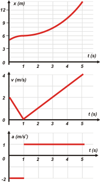

|  |
Empecemos con el de velocidad que es una papa. En en primer tramo el gráfico del enunciado nos indica una aceleración e -2 m/s². Como dura apenas un segundo la velocidad habrá disminuido en 2 m/s. Y como en el instante 0 s su valor (lo indica el enunciado) es 2 m/s al cabo de un segundo valdrá 0. A partir de ahí crece con una aceleración de 1 m/s², con lo que al cabo de 4 segundos (en el instante 5 s) su valor será 4 m/s.
Vamos al de posición. En el instante inicial la Ahora me voy nuevamente al gráfico de velocidad y averiguo los desplazamientos integrando (perdón por la palabra) el área bajo la curva. Ese triangulito (2X1/2) mide 1 m y como se halla sobre el eje de los tiempos no cabe duda de que se trata de un avance. Luego pasa del metro 5 al metro 6 a lo largo de un hermoso arco de parábola de concavidad negativa que termina con inclinación nula. Es cortito pero se disfruta.
A partir de ahí habrá otro arco de parábola, ahora de concavidad positiva, o sea, sonriente, que arranca desde 6 m con una inclinación nula y llega hasta... |